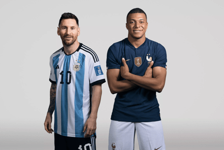
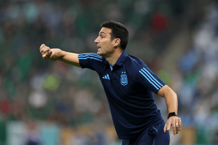
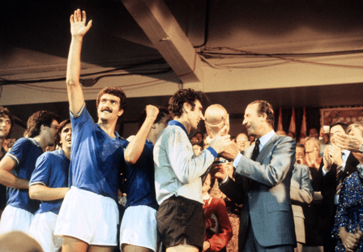
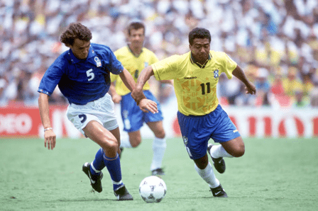

Breaking News

Argentina is going head to head with France starting on
18 Dec 2022 at 15:00 UTC at Lusail Iconic Stadium stadium, Lusail city, Qatar.
The match is a part of the World Cup, Knockout stage.

Here are the reactions after Messi starred in Argentina’s
2-0 win over Mexico at the FIFA World Cup.
Messi was involved in both the goals, scoring and assisting one,
at the Lusail Stadium in Qatar.
With the goal, the 35-year-old took his goal tally to eight
, going level with the two-time World Cup winner Maradona and
his compatriot Cristiano Ronaldo, who also got to that feat,
in this edition of the World Cup, in Qatar 2022.

Johan Neeskens of the Netherlands scored the fastest goal in a World Cup final
after just 88 seconds, before opponents West Germany had even touched the ball, in 1974.
The Netherlands kicked off and put 16 passes together until the ball arrived at the feet of Johan Cruyff,
who befuddled Berti Vogts and Uli Hoeness to earn the first-ever spot-kick in a World Cup final,
which Neeskens converted. The first penalty may have taken 44 years to be awarded,
but the second took merely another 23 minutes.

Messi is one of only six men to have played in five World Cups alongside Antonio Carbajal,
Lothar Matthaus, Rafa Marquez, Andres Guardado and Cristiano Ronaldo.
Messi is the only player to register an assist in five World Cups.
His closest challengers are Pele, Grzegorz Lato,
Diego Maradona and David Beckham, who set up goals in three editions apiece.